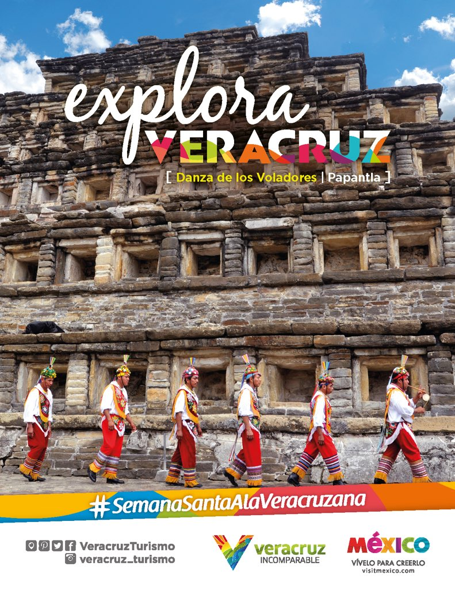
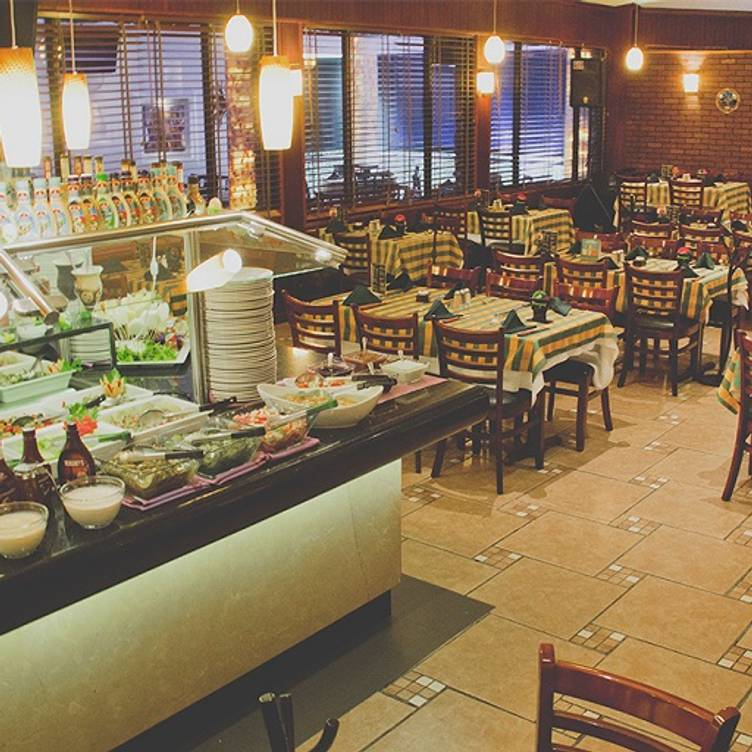
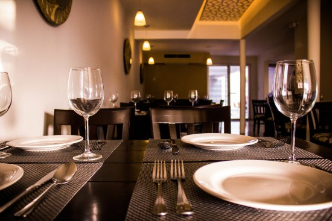
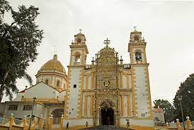
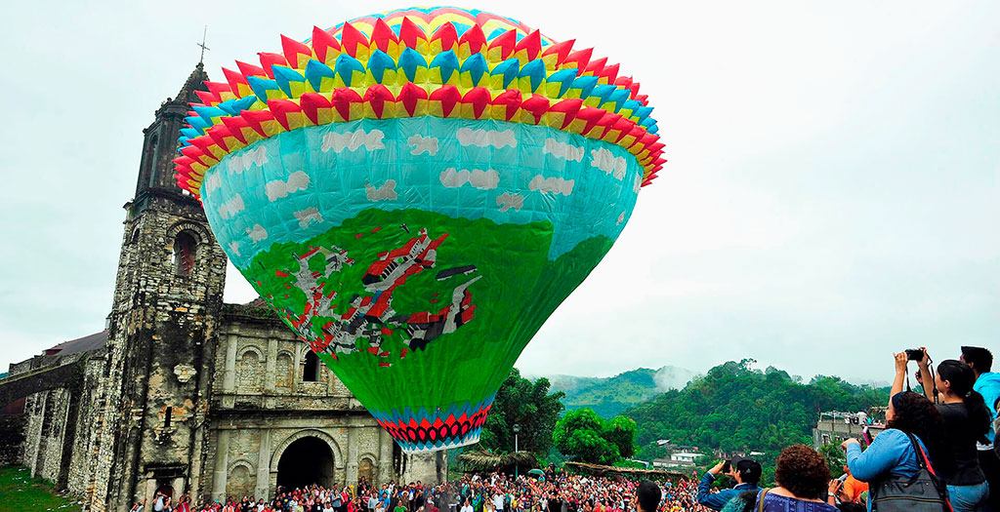
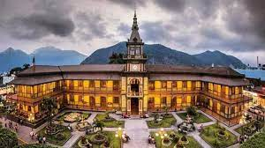
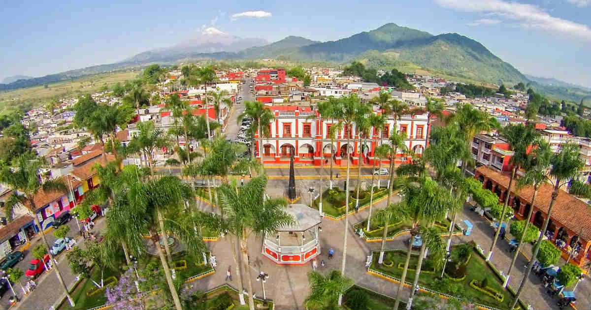
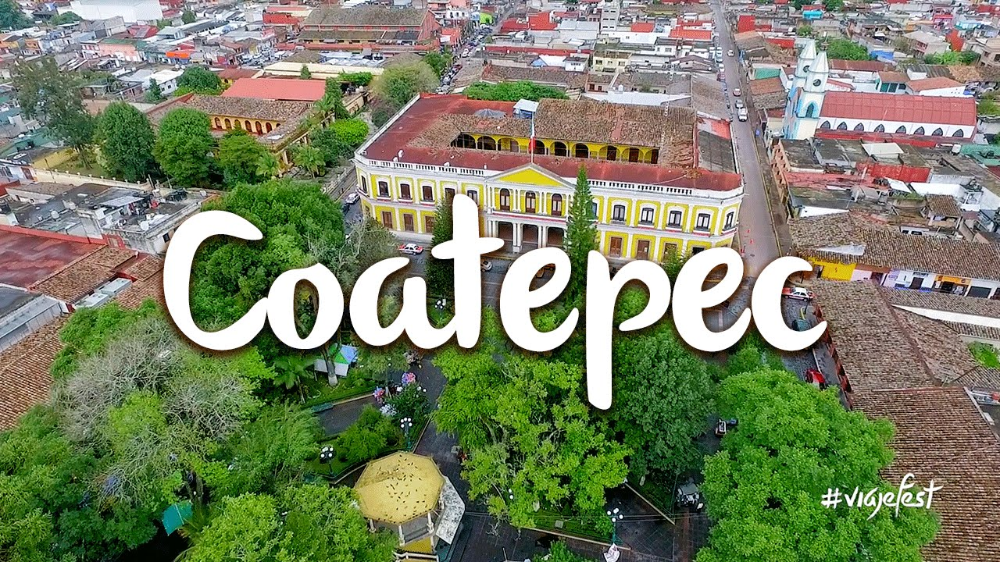

Veracruz, oficialmente llamado Estado Libre y Soberano de Veracruz de Ignacio de la Llave,8 es uno de los treinta y un estados que, junto con la Ciudad de México, conforman México.910 Su capital y ciudad más poblada es Xalapa-Enríquez. El nombre del estado proviene del exgobernador Ignacio de la Llave. Tiene una población de 8,112,505 hab. (estimación del 2015), el 6.8% del total del país. Es el tercer estado más poblado y el undécimo más densamente poblado con 113 hab/km². Tiene un total de ocho zonas metropolitanas: Veracruz, Xalapa, Poza Rica, Orizaba, Minatitlán, Coatzacoalcos, Córdoba y Acayucan. En la época prehispánica habitaron las civilizaciones olmeca, huasteca y totonaca. El primer contacto español fue en 1518, por una exploración capitaneada por Juan de Grijalva en el río Tonalá. En el Virreinato de la Nueva España el territorio actual que conforma Veracruz era muy parecido a la Provincia de Veracruz. Tras la Independencia de México, fue una de las entidades federativas originales (séptima en orden de creación) con un territorio casi idéntico al actual (por excepción de una porción de territorio que le pertenecía a Puebla) y con la promulgación de la Constitución de 1857 llegó a su extensión actual. Su Índice de Desarrollo Humano (IDH) es de 0.713, considerado Alto; es el quinto estado con menor IDH. Como muestra de su importancia cultural a nivel internacional alberga dos de treinta y cinco lugares considerados Patrimonio de la Humanidad en México: la Ciudad Prehispánica de El Tajín y Zona de monumentos históricos de Tlacotalpan.El nombre del estado se debe a la cuatro veces heroica ciudad y puerto de Veracruz, fundada el 22 de abril de 1519, como la Villa Rica de la Vera Cruz dicho nombre tiene el siguiente origen: Villa por ser parecido a las villas españolas; Rica por la cantidad de oro obtenido de los indígenas y Vera Cruz debido a la fecha en que desembarcaron frente a la Isla de San Juan de Ulúa, era Viernes Santo, fecha en la que se conmemora la muerte de Jesucristo en la cruz, el día de la verdadera cruz.11 Al promulgarse la Constitución de 1824, el estado recibe por primera vez el nombre de Veracruz, y oficialmente se constituyó como Estado Libre y Soberano de Veracruz.12 El 10 de julio de 1863 por decreto se establece que en lo sucesivo pasará a llamarse Estado Libre y Soberano de Veracruz-Llave, en honor al general y gobernador veracruzano Ignacio de la Llave
Si quieres visitar vereacruz te invitamos a ver los siguientes hoteles para evitar contratiempos y puedas tener una visita agradable y buena al estado.
(Quieres mas opciones da click en el boton de abajo)
Mas hotelesA continuacion el numero de turistas que han visitado veracruz en el mes de agosto del 2019
Ciobanus es un restaurante de comida internacional, orientado a brindar alimentos de calidad, con excelente presentación, sabor y a un precio justo. Procuramos que nuestros insumos sean orgánicos, de producción local, o preparados por nosotros mismos.

Mr Pampas do Brasil marca líder en su categoría de gastronomía brasileña con 13 sucursales en la República Mexicana. 18 años nos respaldan con la calidad, el sabor y el servicio que damos a nuestros clientes. Ofrecemos un sistema ¨Rodizio¨ (rotativo) de 30 finos cortes de carne al carbón en espadas brasileñas y una variada barra con ensaladas frescas, pastas, sushi, verduras, mariscos, carnes frías, variedad de quesos y área caliente con guisados, caldos, empanadas, sopas y mucho más. Nuestras espadas incluyen pollo, res, pavo, cerdo, cordero y mariscos en diferentes presentaciones, al término de tu preferencia. Además de la rica piña asada con canela y el delicioso pan con ajo. Nuestro principal objetivo es hacer que cada visita a Mr. Pampas este llena de calidad, sabor y servicio Excelente ambiente familiar y cómodas instalaciones
Excelente servicio y la comida simplemente deliciosa y el chef anfitrión Excelente. Volveré y recomiendo el perejil frito y el róbalo a la Serrana y el strudel de higo y su mezcla de temarindo y en fin probaré toda la carta en mus visitas por Veracruz.

Papantla es la tierra de la vainilla, así como de los famosos Voladores, hombres que al ritmo de tambores y flautas celebran la fertilidad de la tierra.
mas informacion
Xico es un hermoso Pueblo Mágico distinguido por su encanto de provincia, gracias a sus bellas casas coloniales, sus flores, sus árboles que dan frutos durante todo el año, sus verdes montañas.
mas informacion
Este Pueblo Mágico, Joya del Totonacapan, fusiona lo tradicional y la naturaleza; la bóveda de la parroquia de San Miguel Arcángel se enmarcada por candiles de colores, por globos de cantolla avivados por fuego y danzas de santiagueros.
mas informacion
Este Pueblo Mágico es custodiado por el espectacular y nevado Pico de Orizaba; enclavado en las montañas de la zona central de Veracruz. Fue una importante ciudad virreinal, reputada como la más culta del país y en su fulgurante historia acumuló un patrimonio arquitectónico digno de admiración.
mas informacion
Este pequeño Pueblo Mágico es un lugar donde respiras aire puro y su guardián, el Pico de Orizaba, crea un hilo plateado cuando se deshiela en su cascada de Alpatláhuac. En este poblado podrás descubrir los secretos requeridos para el armado de un puro: combustión, aroma y sabor; los encontrarás en talleres de puros en los alrededores que puedes visitar.
mas informacion
Este Pueblo Mágico se localiza a los pies del Cofre de Perote, a una altitud y temperatura óptimas para la producción del grano con que se prepara la estimulante bebida del café.
mas informacion